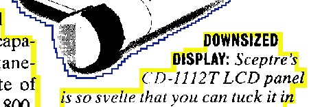
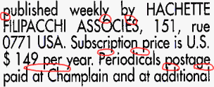

A scanner generates an image of the paper document and the text is intelligently “extracted” from that image. But what really happens? Can we be more specific about the recognition process?

The OCR software extracts text information from the black-and-white pixels of the selected zones: it recognizes the shapes and assigns characters. This is done in several steps.


The stage is set, let’s now discuss the successive steps of the OCR process in detail!
Let’s take things step by step, shall we? — Take us where the rainbow ends! — B is for binarize — What gets read and what doesn’t — Lines, lineskew and drop letters — Segmenting words and characters — Stylized fonts — Why is OCR software called omnifont? — What’s the role of linguistics in the OCR process?
Home page — Intro — Scanners — Images — History — OCR — Languages — Accuracy — Output — BCR — Pen scanners — Sitemap — Search — Feedback – Contact